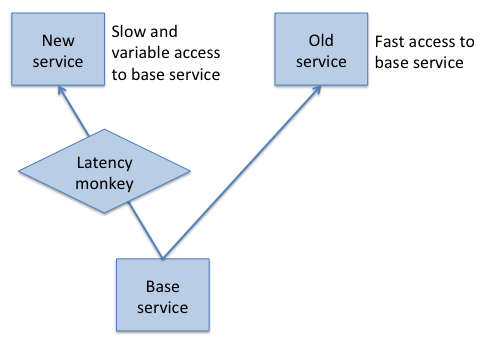

Source: The Antifragile Organization.
“Resilience is an attribute of a system that enables it to deal with failure in a way that does not cause the entire system to fail.”—Tseitlin, p. 42.
Redundancy and fault tolerance
Regularly induce failure
Simply listing possible failures helps you understand your system:
“Monkeys”—scripts that deliberately fail key services
Open source versions of Chaos Monkey, Conformity Monkey, and Janitor Monkey
Randomly terminates live, customer-facing instances
Ensures that services do not rely on * On-instance state * Instance affinity (has to run on specific instance) * Persistent connections
Services can set probability or opt out
Causes Netflix services for an entire Amazon Availability Zone to fail * Partitioned mode (both sides continue) * Total failure (failed zone terminated)
“Causes massive damage” to Netflix’s services * As of 2012, only run manually * Increasingly aggressive with every run
Takes down Netflix services for an entire Amazon Region (multiple Availability Zones)
A resilient system cannot be limited to one Zone
Chaos Kong still under development
Introduces delays in client-server communication
Service is still there, just slow

Useful for testing resilience of new services * Increase latency of services they depend upon * Leave latency unchanged for all other clients of that service
A style checker (“lint”) for instances
Locates resources that should be deleted
Notifies owner
Owner has three days to countermand the deletion
Structured introduction of monkeys
Constantly monitor the health of your system
When users are impacted by a real event, turn off the monkeys
Record all changes to the system
Developers operate the services they create
Learn from failures
Blameless culture
Read Weathering the Unexpected.
Google’s Disaster Recovery Testing event (DiRT) is a complementary approach to Netflix’s Simian Army. Where Simian Army uses automated failures of key services, DiRT uses manual failures of key services.